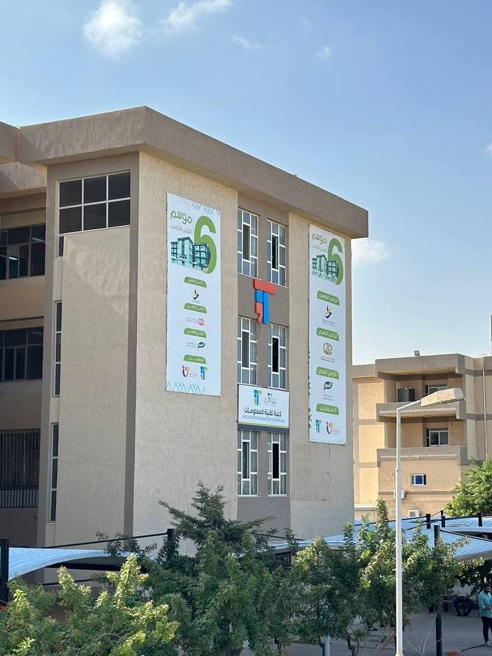

كلية طب وجراحة الفم و الأسنان | ||||
النظام الدراسي :تتبع الكلية نظام الدراسة السنوي، حيث يبدأ الطالب بالسنة الإعدادية، وبعد اجتيازها يلتحق بالكلية.يستمر الطالب في الدراسة لمدة خمس سنوات أكاديمية، يعقبها سنة الامتياز التي تؤهله للعمل كطبيب أسنان التخصصات :
مواد الكلية :
|
 | |||